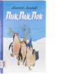

Алексей Михайлович Лаптев писал не просто стихи для детей. Вместе с иллюстрациями они составляют целые книги игр и загадок. Что нарисовал на полу котенок перепутанными нитками? Где потерял краски суслик? Чтобы ответить на вопрос стихотворения, нужно очень внимательно рассмотреть картинки, полные смешных и интересных деталей. Самых маленьких читатели книги порадуют стихи про таких же малышей, как они сами - маленького мышонка, который случайно прилип к грибу и зовет маму, про "совсем взрослого" цыпленка, которому исполнилось (уже!) три дня, крошечного птенчика, который хочет пить, и храбрецов-утят, которые никак не решатся напасть на жука. Можно и посмеяться над жадноватыми или хвастливыми, трусливыми или глупыми героями, и сделать кое-какие полезные выводы для себя. В этой книге собрана целая коллекция жанров, понятных даже самым маленьким. Вот пьеска "Песенка" - всего четыре строчки, но